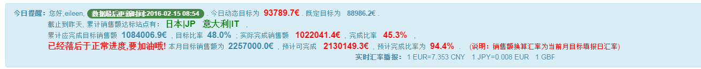
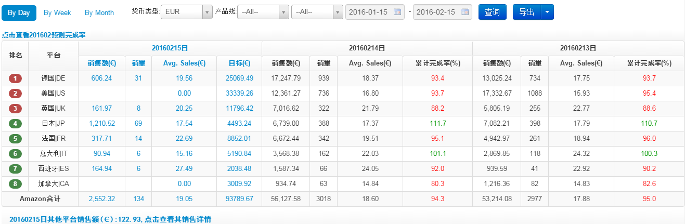
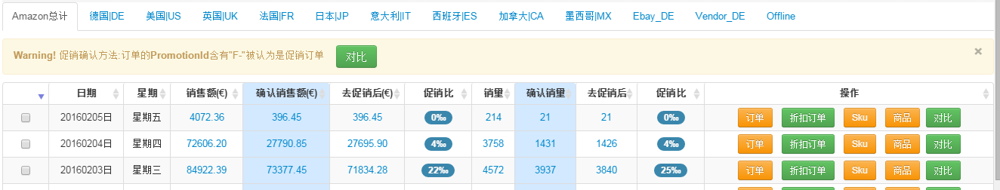
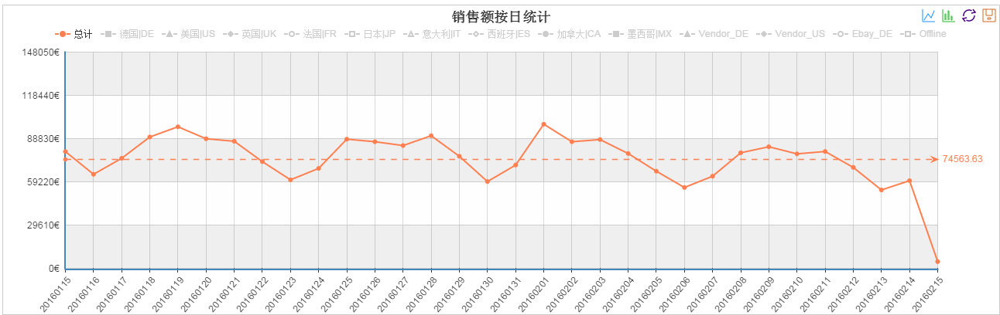
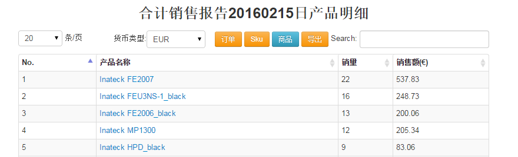

销售统计
目标介绍:

- 今日动态目标：将剩余天数需要完成的目标根据剩余天权重比分配的动态日目标，既定目标：将总目标根据每天权重比分配的固定日目标
- 累计完成率：累计实际销量/累计日目标，累计销售额达标站点：累计完成率大于100%的国家
- 累计应完成目标销售额：总目标根据每天权重比分配的日目标累计和，目标比率：累计应完成目标销售额/总目标
- 实际完成销售额：累计到昨天完成的实际销售和，完成比率：实际完成销售额/总目标
- 本月目标销售额：月目标,预计可完成：累计完成销售额/(累计日权重/整个月权重和)，预计完成比率：预计可完成/本月目标销售额
最近三天销量查看:

- 按日或周或月、货币类型、产品线（具体到产品类型）和时间统计销售情况,统计当天的动态目标，其他天的累计完成率情况
- Avg.Sales：销售额/销量
- 点击查看预测完成率：根据所选结束时间所在月统计每天的预测完成率情况，点击查看其他详情：点击查看Ebay_DE、Vendor_DE和线下订单销售情况
- 导出，页面数据：按照页面数据显示情况导出相应tab页内容，页面数据所有国家：按照页面数据显示情况导出所有国家相应内容，分产品汇总统计：分产品分国家汇总销售情况，分产品类型统计：根据所选国家tab页导出所有产品类型销售情况
，分产品类型所有国家：导出所有国家所有产品类型销售情况，分产品详情统计：根据所选国家tab页导出所有产品销售情况，分产品线所有国家：分产品线汇总所有国家销售情况
分国家销售统计:

- 销售额统计排除订单状态为Canceled的订单，确认销售额统计排除订单状态为Pending和Canceled的订单，去促销后统计排除订单PromotionId含有"F-"订单
- 点击订单按钮，查询当前日期等条件下所有订单明细，点击折扣订单按钮，查询当前日期等条件下所有折扣订单明细
- 点击SKU按钮，查询当前日期等条件下按SKU汇总销售情况，点击商品按钮，查询当前日期等条件下按产品汇总销售情况
- 勾选两个区间段，点提醒栏对比按钮，分产品比较两个区间段销售情况，点击每一行记录对比按钮，默认分产品比较当天和昨天的销售情况
销售额图表:

- 默认展示总计折线图，点击各国家图例展示相应国家折线图，右上角点击柱形图图例可切换图表为柱形图
订单、SKU和商品明细:

- 当前页面展示蓝颜色按钮相应内容，点击订单按钮或sku按钮或商品按钮，切换到相对应条件明细查询，导出相对应条件数据记录